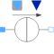

VariableCurrentSourceVariable AC current |

|
Information
This information is part of the Modelica Standard Library maintained by the Modelica Association.
This is a current source with a complex signal input, specifying the complex current by the complex RMS current components. Additionally, the frequency of the voltage source is defined by a real signal input.
See also
Connectors (4)
| pin_p |
Type: PositivePin Description: Positive quasi-static single-phase pin |
|
|---|---|---|
| pin_n |
Type: NegativePin Description: Negative quasi-static single-phase pin |
|
| f |
Type: RealInput |
|
| I |
Type: ComplexInput |
Components (2)
| v |
Type: ComplexVoltage Description: Complex voltage |
|
|---|---|---|
| i |
Type: ComplexCurrent Description: Complex current |
Used in Examples (2)
|
Modelica.Electrical.QuasiStationary.SinglePhase.Examples
Parallel resonance circuit |
|
|
Modelica.Electrical.QuasiStationary.SinglePhase.Examples
Example of transformer with short circuit impedance, transmission resistances and load |
Used in Components (1)
|
Modelica.Electrical.QuasiStationary.SinglePhase.Sources
Current source with integrated frequency sweep |